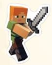

Minecraft Editions
There are two editions for Minecraft: JAVA and BEDROCK.
Minecraft: Java Edition
1.) On Sept 18, 2017, the original version of Minecraft was renamed to Minecraft: Java Edition to differentiate it from Minecraft: Bedrock Edition. It is named Java because it is written in Java.
2.) Since Java has been around for much longer, it has much more servers available to the public. It is much easier for new players to find and join a sever. There is a vast number of public servers which you can join on.
3.) Java has 5 game modes: survival, creative, adventure, spectator, and hardcore.
4.) There are world generations that are exclusize to Java.
5.) Java has more capacity to add "mods" and add-ons to the game. In Bedrock, you have to pay in Minecraft Marketplace to get texture packs and cuztomizations. In Java, not only are there more customizations than bedrock, you can get it for free!
Minecraft: Bedrock Edition
1.) The early alpha version of Minecraft: Pocket Edition for Android and iOS was released on August 2011. It wasn’t until Dec 19, 2016 that the full edition was released. Its code is written in C++ because iOS devices do not support Java. It was renamed to Minecraft: Bedrock Edition in 2017. Versions of this game were also added to Xbox One and Nintendo Switch, making cross-platform possible. If you are friends on your Microsoft Accounts, you can join each other’s world much easier and faster.
2.) Bedrock only has 3 gamemodes: survival, creative, and adventure.
3.) Bedrock has amore smooth experience playing than Java.
These are the main differences of Java and Bedrock. There are other small differences and you can check them out in this mixtape.